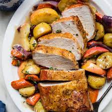

Pork roast

Roast pork with crackling
This classic roast pork recipe with lots of delicious crackling is great for Sunday lunch with the family. Top with our tasty apple & cider gravy.
Ingredients
- 1.8kg piece of rolled and tied pork loin with the skin scored
- 2 garlic cloves, sliced into thin slivers
- small bunch rosemary, broken into small sprigs
- 3 bay leaves, torn
- 1 onion, roughly chopped
- 1 large carrot, chopped
- 1 Bramley apple, peeled, quartered, cored and roughly sliced
- 1 tbsp sunflower oil
- 2 tbsp plain flour
- 100ml good quality cider
- 500ml vegetable or chicken stock
Steps
- If you have time, rub salt in the pork skin 2 hours before cooking and leave it uncovered in the fridge.
Heat the oven to 230C/210C fan/gas 8. Turn the pork rind-side down and with a small knife make about 6 deep incisions along the meat.
Poke a sliver of garlic, a piece of rosemary and bay in each incision and turn the pork the right way up.
If you didn’t salt the pork earlier salt the skin now.
- Mix the carrot, onion and apple and scatter along the middle of a shallow roasting tray to make a bed for the pork to sit on.
Sit the pork on the vegetables and rub the skin with the oil. Place the pork in the oven and leave for 15 mins
then turn the heat down to 180C/160C fan/gas 4 and continue to roast for 1hr 30 mins.
If after this time you don’t have brilliant crackling turn the heat up again and check every 5 mins until the skin has crackled.
- Remove the pork from the roasting tray to a board to rest and pour off all but about 2 tbsp of fat from the tray.
If your tray is robust enough to go on the heat then do so, if not scrape the contents into a shallow saucepan and place on the heat.
Stir the flour in with the veg and cook until you have a mushy, dark amber paste then splash in
the cider and bubble down to a thick paste again. Pour in the stock and simmer everything for 8-10 mins until you have thickened gravy.
Strain the sauce into another saucepan pushing as much puréed apple as you can through the sieve. Simmer again and season to taste.
- Carve the pork loin with crackling attached into slices using a serrated knife and serve with your favourite vegetables and the apple and cider gravy.